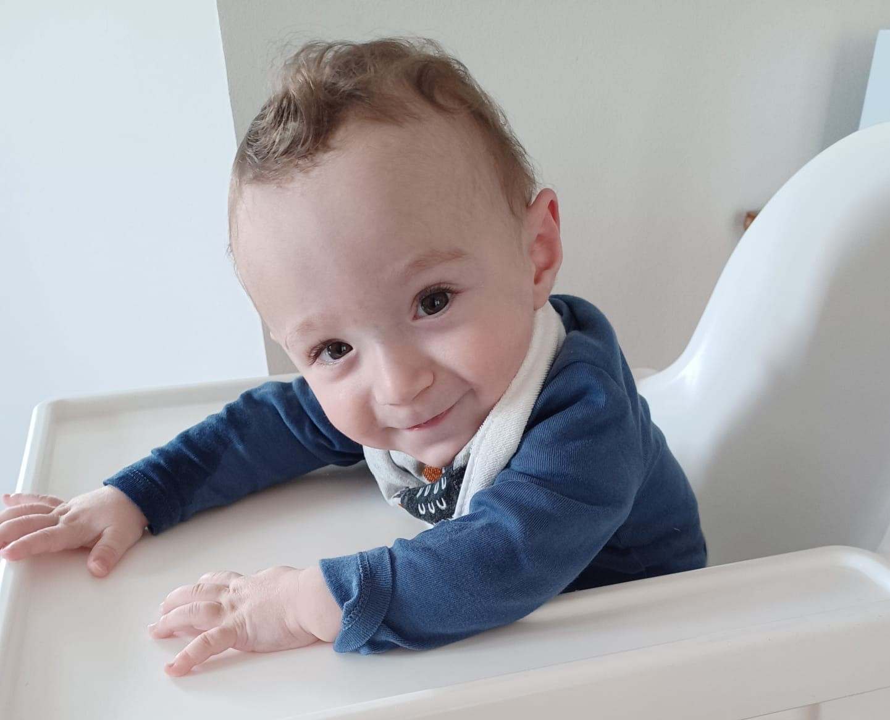

Saremo felici di avervi con noi per il battesimo di Mattia il prossimo 14 Aprile, ore 15.00 nella chiesa di Milano2, e all'aperitivo che seguirà.

Nous serons heureux de vous avoir avec nous pour le baptême de Mattia le 14 avril prochain à l'église de Milano2, 15.00, puis à l'apéritif qui suivra.